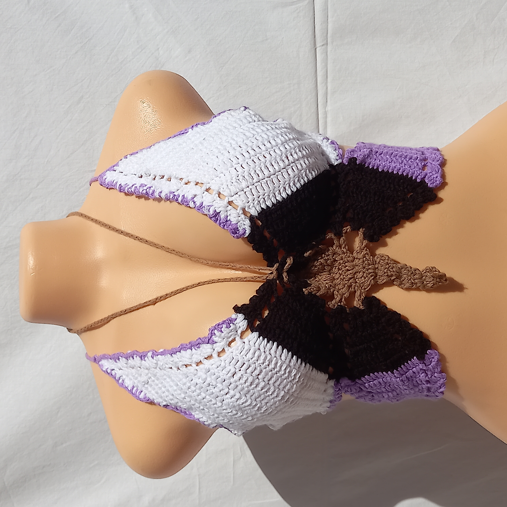

When Aesthetes G0 Into Fashion
Bralettes are a versatile garment that can be worn as both innerwear and outerwear. Available in a range of styles, from lacy and delicate to sporty and edgy, they offer a comfortable and fashionable alternative to traditional bras.
Unlike wired bras, bralettes are wire-free and feature minimal or no padding. This design creates a more natural breast shape and offers a lighter level of support. It's important to note that some bralettes may not provide enough support for larger busts, so it's important to choose a design that fits your body type.
One of the benefits of bralettes is their versatility. You can wear them in place of a bra or layer them over a bra for added support. They can also be worn under a top or as a standalone piece, making them a great option for layering. When worn as a top, they can create a trendy and stylish look, especially when paired with high-waisted jeans or a denim jacket.
Another advantage of bralettes is their comfort. Made from soft and stretchy fabrics, they are gentle on the skin and provide a comfortable fit. They are especially ideal for days when you want to forego the discomfort of an underwire bra or a restrictive sports bra.
Overall, bralettes offer a stylish and comfortable alternative to traditional bras. With their versatile designs and comfortable fabrics, they are perfect for everyday wear or as a trendy addition to any outfit. Just remember to choose a design that offers enough support for your body type, and you're sure to enjoy the benefits of this trendy garment.
see the Aesthetes page